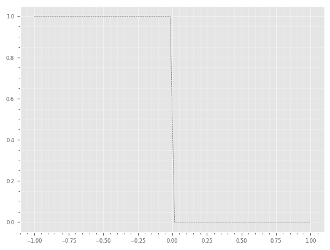
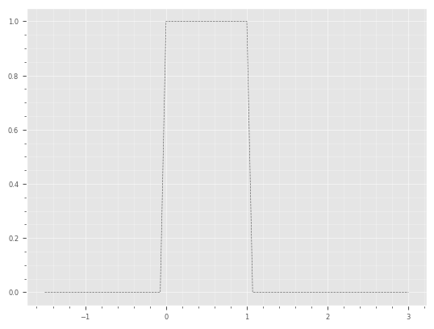

整数域上的折叠实现
Contents
整数域上的折叠实现#
磨光技术：rising cutoff functioin#
from abc import ABCMeta, abstractmethod
import numpy as np
class rcf(object, metaclass=ABCMeta):
@abstractmethod
def __init__(self,E,type):
self._E=E
if type=='grid' or type=='mid':
self._type=type
else:
raise ValueError
if self._type=='grid':
self._data=np.empty(2*self._E-1,dtype=float)
self.__rcfgrid()
else:
self._data=np.empty(2*self._E,dtype=float)
self.__rcfmid()
def __getitem__(self,position):
return self._data[position]
def __len__(self):
return len(self._data)
@abstractmethod
def rcf_fct(self,t):
pass
@abstractmethod
def param(self):
pass
# rcf sampled at grid point
# declare rcfgrid as private method
# the array is arranged as:
# _grid[1]..._grid[E] for rcf at t=1/E,2/E,...,1
# _grid[:-1]..._grid[:-E] for rcf at t=-1/E,-2/E,...,-1
def __rcfgrid(self):
t=0.0
dt=1.0/self._E # 1/(final+1)
self._data[0]=np.sqrt(0.5)
for j in range(1,self._E):
t=t+dt
self._data[j] = self.rcf_fct(t)
self._data[-j] = self.rcf_fct(-t)
# rcf sampled at mid point
# declare rcfmid as private method
# the array is arranged as:
# _grid[1]..._grid[E]: for rcf at (0+1/2)/E,(1+1/2)/E,...,1-1/(2E)
# _grid[-1]..._grid[:-E+1]: for rcf at -(0+1/2)/E,-(1+1/2)/E,...,-1+1/(2E)
def __rcfmid(self):
t = 0.5/self._E
dt = 1.0/self._E
for j in range(0,self._E):
self._data[j]=self.rcf_fct(t)
self._data[-j-1]=self.rcf_fct(-t)
t = t+dt
def order_indexes(self):
if (self._type=='grid'):
oi = list(range(2*self._E-1))
return np.roll(oi,self._E-1)
else:
oi = list(range(2*self._E))
return np.roll(oi,self._E)
def final(self):
return self._E-1
def least(self):
if self._type == 'grid':
return -self._E+1
else:
return -self._E
def type(self):
return self._type
class rcfis(rcf):
def __init__(self,E,type,ni=1):
self._num_itr=ni
rcf.__init__(self,E,type)
@classmethod
def grid(cls,E,ni=1):
return cls(E,'grid',ni)
@classmethod
def mid(cls,E,ni=1):
return cls(E,'mid',ni)
def rcf_fct(self,t):
if t>-1.0:
if t<1.0:
for i in range(0,self._num_itr):
t = np.sin(0.5*np.pi*t)
t = np.sin(0.25*np.pi*(1.0+t))
else:
t = 1.0
else:
t = 0.0
return t
def param(self):
return self._num_itr
class rcfth(rcf):
pass
import numpy as np
import matplotlib.pyplot as plt
import scipy
import sys
from rcf import rcfis
import fold
from qiplot import plot_ts
import qisignal
from qisignal import *
from utils import *
plt.style.use(['ggplot','../../presentation.mplstyle'])
r=rcfis.grid(32,1)
r.type()
'grid'
len(r)
63
fig,ax=plt.subplots()
t=np.linspace(-1,1,len(r))
plot_ts(ax,t,r,title='rcf N=1')

oi=r.order_indexes()
fig,ax=plt.subplots()
plot_ts(ax,t,r[oi],title='rcf for '+ r.type()+' sampled, N='+str(r.param()))

r=rcfis.mid(32)
t=np.linspace(-1,1,len(r))
oi=r.order_indexes()
fig,ax=plt.subplots()
plot_ts(ax,t,r[oi],title='rcf for '+ r.type()+' sampled, N='+str(r.param()))
def test_rcf_identity(r):
E=int(np.ceil(len(r)/2))
for i in range(E):
if r.type()=='mid':
ans=np.isclose(r[i]*r[i]+r[-i-1]*r[-i-1],1.0)
else:
ans=np.isclose(r[i]*r[i]+r[-i]*r[-i],1.0)
if ans==False:
break
return ans
test_rcf_identity(r)
True
r=rcfis.grid(32)
test_rcf_identity(r)
True
折叠算子\(U\)和逆折叠算子\(U^*\)#
import numpy as np
import rcf
# $U$ operator
# r must be mid sampled
def fipc(sig,r):
if r.type()!='mid':
raise ValueError
for k in range(r.final()+1):
# r(t)f(t)+r(-t)f(-t)
tmp = r[k]*sig[k]+r[-k-1]*sig[-k-1]
# r(t)f(-t)-r(-t)f(t)
sig[-k-1]=r[k]*sig[-k-1]-r[-k-1]*sig[k]
sig[k]=tmp
# $U^*$ operator
# r must be mid sampled
def fips(sig,r):
if r.type()!='mid':
raise ValueError
for k in range(r.final()+1):
# r(t)f(t)-r(-t)f(-t)
tmp = r[k]*sig[k]-r[-k-1]*sig[-k-1]
# r(t)f(-t)+r(-t)f(t)
sig[-k-1]=r[k]*sig[-k-1]+r[-k-1]*sig[k]
sig[k]=tmp
uipc=fips
uips=fipc
fipc，uips：
fips，uipc:
r=rcfis.mid(32)
t=np.linspace(-1,1,len(r))
one=np.repeat(1.0,len(t))
fold.fipc(one,r)
fig,ax=plt.subplots()
oi=qisignal.order_indexes(len(t),int(len(t)/2))
plot_ts(ax,t,one[oi])

one=np.repeat(1.0,len(t))
fold.uipc(one,r)
fig,ax=plt.subplots()
oi=qisignal.order_indexes(len(t),int(len(t)/2))
plot_ts(ax,t,one[oi])
验证恒等式 \(U^*U=UU^*\)#
one=np.repeat(1.0,len(t))
fold.fipc(one,r)
fold.uipc(one,r)
fig,ax=plt.subplots()
plot_ts(ax,t,one[oi])
one=np.repeat(1.0,len(t))
fold.fips(one,r)
fold.uips(one,r)
fig,ax=plt.subplots()
plot_ts(ax,t,one[oi])

单边磨光#
信号的预备#
我们所构造的信号\(x(t)\)由数组表达，通常数组的顺序是按\(t\)从小到大的排序，如下图所示：
x=[1 if v<0 else 0 for v in t]
fig,ax=plt.subplots()
plot_ts(ax,t,x)

oi=list(range(len(t)))
left_rotate(oi,int(len(t)/2))
注意：下面的np.array的用法，默认的dtype是int，所以dtype='float'不能漏掉。
x=np.array(x,dtype='float')
fig,ax=plt.subplots()
plot_ts(ax,t,x[oi])

signal这个类就是方便这种数据的预处理：数组是按算法的要求将原来的顺序变成\([x(t_0),x(t_1)\cdots,x(t_E),x(t_{-E}),x(t_{-E+1}),\cdots,x(t_{-1})]\)来存储，但是类中的plot函数是按原来的顺序显示。
x1=signal_p(t,x)
fig,ax=plt.subplots()
x1.plot(ax)

右边磨光用fipc或uips#
fold.fipc(x1,r)
fig,ax=plt.subplots()
x1.plot(ax)
左边磨光用fips或uipc#
x=np.array([0 if v<0 else 1 for v in t],dtype='float')
x1=signal_p(t,x)
fig,ax=plt.subplots()
x1.plot(ax)

fold.uipc(x1,r)
fig,ax=plt.subplots()
x1.plot(ax)

双边磨光#
对函数的操作#
内积#
t=np.linspace(-1,1,len(r))
N=len(t)
ec=np.ndarray(shape=(N,N),dtype=float)
es=np.ndarray(shape=(N,N),dtype=float)
for v in range(N):
delta=np.repeat(0.0,N)
delta[v]=1
tmp=np.fft.ifft(delta)
ec[v]=np.real(tmp)
es[v]=np.imag(tmp)
fig,axes=plt.subplots(1,2,figsize=(12,4))
v=3
plot_ts(axes[0],t,ec[3],title='cosine basis, freq='+str(v))
plot_ts(axes[1],t,es[3],title='sine basis, freq='+str(v))